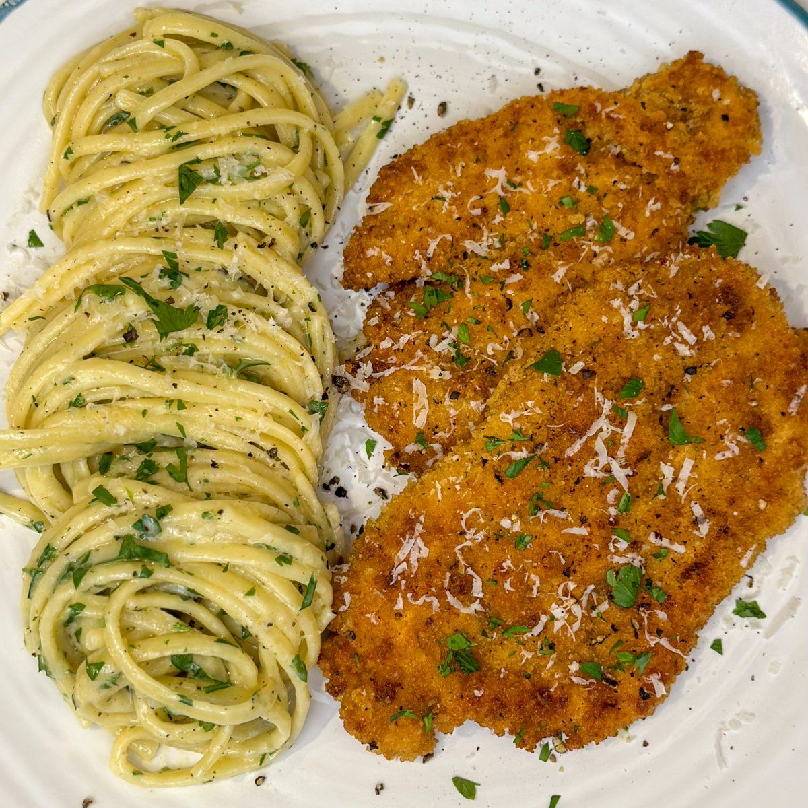
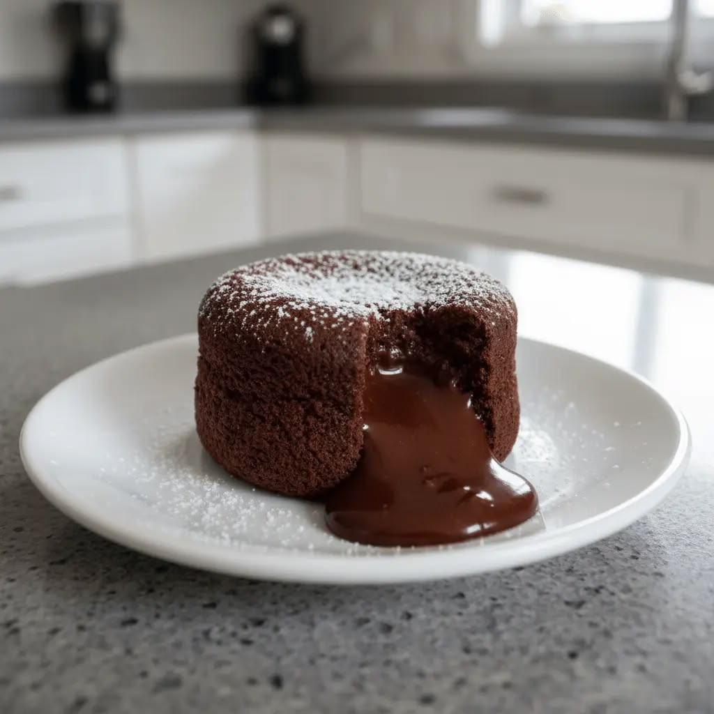

ENTRADA
Muzarellitas rebozadas
INGREDIENTES
- 300g de muzarella en barra
- 2 huevos
- Pan rallado o panko
- Harina, sal y orégano
PASO A PASO
- Cortar la muzarella en bastones.
- Pasar por harina, luego por huevo batido y pan rallado.
- Hacer doble rebozado para que no se escape el queso.
- Congelar por 30 minutos y freír en aceite caliente.
PLATO PRINCIPAL
Milanesa con fideos

INGREDIENTES
- 4 bifes para milanesa
- 2 huevos frescos
- Pan rallado de panadería
- Ajo, perejil picado y sal
- 300g de fideos largos
- Manteca y queso rallado
PASO A PASO
- Sazonar la carne con sal, ajo y perejil picado.
- Pasar cada bife por el huevo batido y luego por el pan rallado.
- Cocinar en sartén con aceite caliente hasta dorar de ambos lados.
- Hervir los fideos en abundante agua con sal hasta que estén al dente.
- Colar la pasta y mezclar con manteca y queso rallado.
POSTRE
Volcán de chocolate

INGREDIENTES
- 100g de chocolate semi-amargo
- 100g de manteca
- 2 huevos enteros y 2 yemas
- 50g de azúcar
- 40g de harina de trigo
PASO A PASO
- Precalentar el horno a 200°C.
- Derretir el chocolate junto con la manteca.
- Batir los huevos con el azúcar.
- Agregar el chocolate derretido y la harina.
- Hornear durante 8 a 10 minutos.